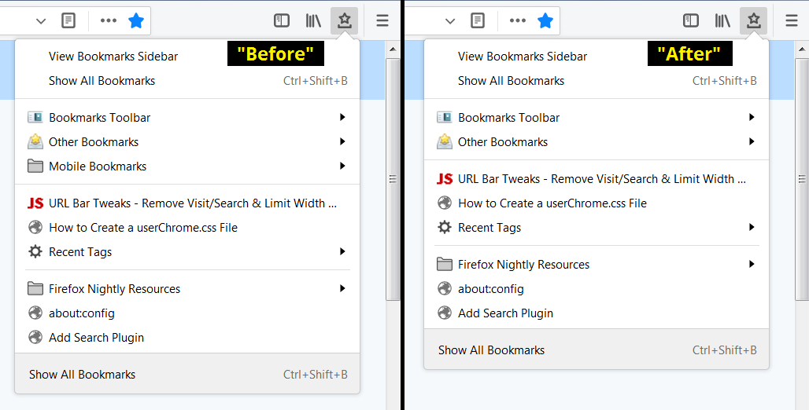
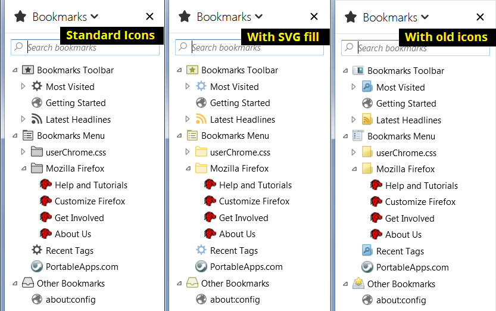
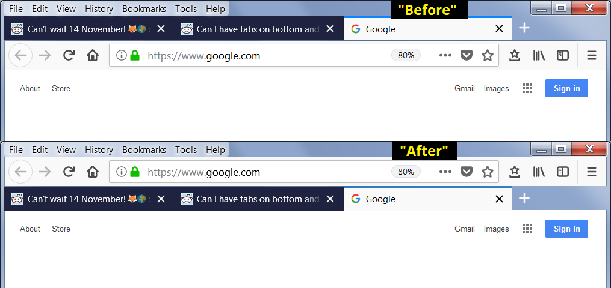
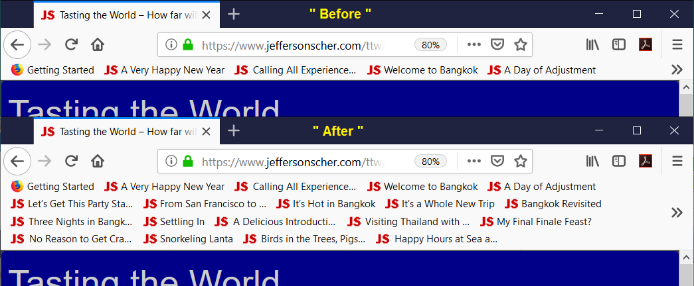
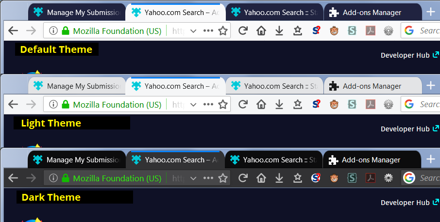

userChrome.css is a style sheet with special importance to Firefox. The rules in userChrome.css are applied to the user interface, and can override nearly every built-in style rule. Unfortunately, you cannot use userChrome.css to change the functional operation of Firefox; that's what extensions are for.
Creating a userChrome.css file and adding style rules allows you to make changes to fonts and colors, hide unnecessary items, adjust spacing, and make other changes to the appearance of Firefox. The following examples illustrate the wide range of effects you can create, either by creating your own style recipes, or building on the work of CSS wizards sharing their talents on the web.
Hide Unwanted Menu Items
Do you have Sync set up, but no mobile bookmarks?

CSS:
/* Hide Mobile Bookmarks from Toolbar Bookmarks Menu */
#BMB_mobileBookmarks {
display: none !important;
}
Among other sources, this was discussed in a Mozilla Support thread: how do I delete the mobile bookmarks folder? If you wanted to hide everything above your own bookmarks, you could use:
/* Hide Top Items on Bookmark Menu Button drop-down */
#BMB_viewBookmarksSidebar,
#BMB_bookmarksShowAllTop,
#BMB_bookmarksShowAllTop + menuseparator,
#BMB_recentBookmarks,
#BMB_recentBookmarks + menuseparator,
#BMB_bookmarksToolbar,
#BMB_unsortedBookmarks,
#BMB_mobileBookmarks,
#BMB_mobileBookmarks + menuseparator {
display: none !important;
}
Color in Gray Bookmark Folder Icons

CSS (download SVG fill) (updated 17 Sept 2018) (10 May 2018 version, 19 Dec 2017 version):
/* Colored folders for Bookmarks Menus, Bookmarks Sidebar, Bookmarks Toolbar, Library window, Add/Edit Bookmarks dialog
Original: https://www.userchrome.org/samples/userChrome-color_bookmark_folders_20171219.css
Updated for Firefox 60: https://www.userchrome.org/samples/userChrome-color_bookmark_folders_20180510.css
Uses mods for Firefox 62 from cor-el's Sept. 15, 2018 post:
https://support.mozilla.org/questions/1232447#answer-1151074
*/
/* Standard folder -- on Toolbar and Menus */
#PlacesToolbarItems toolbarbutton[container="true"] .toolbarbutton-icon,
:-moz-any(
#PlacesToolbarItems,
#PlacesChevronPopup,
#BMB_bookmarksPopup,
#bookmarksMenu) menu[container="true"] > .menu-iconic-left > .menu-iconic-icon,
/* Standard folder -- in Sidebar, Library, Add/Edit Bookmark dialog */
:-moz-any(
#bookmarks-view,
#editBMPanel_folderTree,
#placesList,
#placeContent) treechildren::-moz-tree-image(container),
#editBMPanel_folderMenuList > .menulist-label-box > .menulist-icon,
#editBMPanel_folderMenuList menupopup menuitem {
fill: #e8bb00 !important; /* slightly muted gold */
}
/* Live Bookmark -- on Toolbar and Menus */
#PlacesToolbarItems toolbarbutton[container="true"][livemark="true"] .toolbarbutton-icon,
:-moz-any(
#PlacesToolbarItems,
#PlacesChevronPopup,
#BMB_bookmarksPopup,
#bookmarksMenu) menu[container="true"][livemark="true"] > .menu-iconic-left > .menu-iconic-icon,
/* Live Bookmark -- in Sidebar, Library, Add/Edit Bookmark dialog */
:-moz-any(
#bookmarks-view,
#editBMPanel_folderTree,
#placesList,
#placeContent) treechildren::-moz-tree-image(container, livemark) {
fill: orange !important;
}
/* Smart bookmark folder -- on Toolbar and Menus */
#PlacesToolbarItems toolbarbutton[container="true"][query="true"] .toolbarbutton-icon,
:-moz-any(
#PlacesToolbarItems,
#PlacesChevronPopup,
#BMB_bookmarksPopup,
#bookmarksMenu) menu[container="true"][query="true"] > .menu-iconic-left > .menu-iconic-icon,
/* Smart bookmark folder -- in Sidebar, Library, Add/Edit Bookmark dialog */
:-moz-any(
#bookmarks-view,
#editBMPanel_folderTree,
#placesList,
#placeContent) treechildren::-moz-tree-image(container, query) {
fill: #69c !important; /* similar to blue smart folder color */
}
/*** Top-level "container" icons (otherwise would be Standard folder color) ***/
/* Bookmarks Menu -- in Sidebar, Library, Add/Edit Bookmark dialog */
:-moz-any(
#bookmarks-view,
#editBMPanel_folderTree,
#placesList,
#placeContent) treechildren::-moz-tree-image(container, OrganizerQuery_BookmarksMenu),
:-moz-any(
#bookmarks-view,
#editBMPanel_folderTree,
#placesList,
#placeContent) treechildren::-moz-tree-image(container, queryFolder_menu________),
#editBMPanel_bmRootItem > .menu-iconic-left,
#editBMPanel_folderMenuList[selectedIndex="1"] > .menulist-label-box > .menulist-icon {
fill: olive !important;
}
/* Bookmarks Toolbar -- on Menus */
#BMB_bookmarksPopup #BMB_bookmarksToolbar > .menu-iconic-left > .menu-iconic-icon,
#bookmarksMenuPopup #bookmarksToolbarFolderMenu > .menu-iconic-left > .menu-iconic-icon,
/* Bookmarks Toolbar -- in Sidebar, Library, Add/Edit Bookmark dialog */
:-moz-any(
#bookmarks-view,
#editBMPanel_folderTree,
#placesList,
#placeContent) treechildren::-moz-tree-image(container, OrganizerQuery_BookmarksToolbar),
:-moz-any(
#bookmarks-view,
#editBMPanel_folderTree,
#placesList,
#placeContent) treechildren::-moz-tree-image(container, queryFolder_toolbar_____),
#editBMPanel_toolbarFolderItem > .menu-iconic-left,
#editBMPanel_folderMenuList[selectedIndex="0"] > .menulist-label-box > .menulist-icon {
fill: olive !important;
}
/* Other Bookmarks -- on Menus */
#BMB_bookmarksPopup #BMB_unsortedBookmarks > .menu-iconic-left > .menu-iconic-icon,
#bookmarksMenuPopup #menu_unsortedBookmarks > .menu-iconic-left > .menu-iconic-icon,
/* Other Bookmarks -- in Sidebar, Library, Add/Edit Bookmark dialog */
:-moz-any(
#bookmarks-view,
#editBMPanel_folderTree,
#placesList,
#placeContent) treechildren::-moz-tree-image(container, OrganizerQuery_UnfiledBookmarks),
:-moz-any(
#bookmarks-view,
#editBMPanel_folderTree,
#placesList,
#placeContent) treechildren::-moz-tree-image(container, queryFolder_unfiled_____),
#editBMPanel_unfiledRootItem > .menu-iconic-left,
#editBMPanel_folderMenuList[selectedIndex="2"] > .menulist-label-box > .menulist-icon {
fill: olive !important;
}
/* (Older Firefox) Avoid overriding classic Bookmarks Toolbar and Other Bookmarks icons in menus */
#BMB_bookmarksPopup #BMB_bookmarksToolbar.menu-iconic-icon,
#bookmarksMenu #bookmarksToolbarFolderMenu.menu-iconic-icon {
list-style-image: url("chrome://browser/skin/places/bookmarksToolbar.png") !important;
}
#BMB_bookmarksPopup #BMB_unsortedBookmarks.menu-iconic-icon,
#bookmarksMenu #menu_unsortedBookmarks.menu-iconic-icon {
list-style-image: url("chrome://browser/skin/places/unsortedBookmarks.png") !important;
}
There is a discussion about the original version of this style recipe, and other variations on the theme, on Mozilla's support forum at All bookmarks have grey folders-update 56.
Old Icons Variation: (A) download this zip file containing the style sheet and old images from Firefox 56: Fx56_bookmark_buttons.zip (updated Oct. 13, 2018) (Dec. 19, 2017 version); (B) extract all contents into the chrome folder; (C) if you do NOT have a userChrome.css file, rename userChrome-STARTER.css to userChrome.css; (D) if you DO already have a userChrome.css file, copy the line from userChrome-STARTER.css to the top of your userChrome.css file to include the userChrome_Fx56_bookmark_icons.css file. Firefox will pick up the change at your next startup.
Move the Tab Bar Below the Other Toolbars (like Firefox 1.0-3.6)

Firefox 65+: The structure of the toolbar area has changed. You can use the rules from Aris: Custom CSS tweaks for Firefox Quantum (extract for Windows updated Feb. 22, 2019: download; Mac users, see the original source because there are multiple choices).
CSS for Firefox 57-64 (download) (updated 6 Mar 2018):
/* Tab bar below Navigation & Bookmarks Toolbars */
#nav-bar { /* main toolbar */
-moz-box-ordinal-group: 1 !important;
box-shadow: none !important;
}
#PersonalToolbar { /* bookmarks toolbar */
-moz-box-ordinal-group: 2 !important;
}
#TabsToolbar { /* tab bar */
-moz-box-ordinal-group: 3 !important;
padding-top: 0 !important;
}
/* Clean up spacing */
.titlebar-placeholder {
display: none !important;
}
toolbarbutton.bookmark-item {
padding-top: 2px !important;
padding-bottom: 2px !important;
}
/* Vertical space for min/max/close buttons above the main toolbar */
/* On Mac, if not showing title bar, allow 20 pixels */
#main-window[tabsintitlebar="true"]:not([inFullscreen="true"]) #toolbar-menubar:not([accesskey]) ~ #nav-bar {
margin-top: 20px !important;
}
/* On Windows, if not showing title bar or menu bar, allow 20 pixels */
#main-window[tabsintitlebar="true"] #toolbar-menubar[autohide="true"][inactive="true"] ~ #nav-bar {
margin-top: 20px !important; /* More px may be better on Win10 */
}
/* Sorry, Linux users, I don't know the best approach for you! */
/* Background for Light and Dark themes */
#main-window[lwthemetextcolor="bright"] #TabsToolbar,
#main-window[lwthemetextcolor="dark"] #TabsToolbar {
background-color: var(--chrome-secondary-background-color) !important;
background-image: none !important;
}
#main-window[lwthemetextcolor="dark"] .scrollbutton-up,
#main-window[lwthemetextcolor="dark"] .scrollbutton-down,
#main-window[lwthemetextcolor="dark"] .tabs-newtab-button,
#main-window[lwthemetextcolor="dark"] #new-tab-button,
#main-window[lwthemetextcolor="dark"] #alltabs-button {
fill: var(--lwt-text-color) !important;
}
/* Left and right borders on Win 7 & 8, but not on 10 and later: */
@media (-moz-os-version: windows-win7), (-moz-os-version: windows-win8) {
/* Vertical toolbar border */
#main-window[sizemode=normal] #navigator-toolbox > toolbar#TabsToolbar {
border-left: 1px solid hsla(240,5%,5%,0.3) !important;;
border-right: 1px solid hsla(240,5%,5%,0.3) !important;;
background-clip: padding-box;
}
}
/* Override vertical shifts when moving a tab (9 Jan 2018) */
#TabsToolbar[movingtab] {
padding-bottom: 0 !important;
}
#TabsToolbar[movingtab] > .tabbrowser-tabs {
padding-bottom: 0 !important;
margin-bottom: 0 !important;
}
#TabsToolbar[movingtab] + #nav-bar {
margin-top: 0 !important;
}
Expand the Bookmarks Toolbar to Multiple Rows

CSS:
/* Multi-row Bookmarks Toolbar For Firefox 66 */
/* From https://www.reddit.com/r/FirefoxCSS/comments/b346fz/firefox_66_destroyed_my_more_toolbars_fix/eix109b/ */
#PersonalToolbar {
min-height: unset !important;
max-height: unset !important;
}
#PersonalToolbar #PlacesToolbarItems {
overflow-x: visible !important;
overflow-y: visible !important;
display: inline-block !important;
}
There are multiple style recipes to "wrap" the bookmarks toolbar, including:
- bookmarks_toolbar_multiple_lines.css (by the author of Classic Theme Restorer)
- Multiple row bookmark toolbar for Firefox 57/58? (for Firefox 57-65)
Rearrange the Address Bar Drop-Down List
Perhaps you prefer the two-row display from before Firefox 48?

You can choose from various autocomplete drop-down styles here: URL Bar Tweaks - Remove Visit/Search & Limit Width – userChrome.css Style Builder.
Curve the Tabs
For many users, squared off tabs are unacceptably ugly. It is not too difficult to introduce some rounded shoulders to the tops of tab, but re-creating the flared lower parts is more challenging.

CSS (download):
/* Curve the background tabs at the upper left and right corners
May not work on add-on themes. */
.tabbrowser-tab {
border-radius: 10px 10px 0px 0px / 15px 15px 0px 0px !important;
}
/* Curve active tab and slightly overlap neighboring tabs */
.tabbrowser-tab .tab-background[selected="true"] {
margin-left: -1px !important;
margin-right: -1px !important;
border-radius: 10px 10px 0px 0px / 15px 15px 0px 0px !important;
}
/* Shorten the tab line along the tops of tabs */
.tab-line {
margin-left: 9px !important;
margin-right: 9px !important;
}
/* Shorten the vertical lines between background tabs */
.tabbrowser-tab::before, .tabbrowser-tab::after {
margin-top: 9px !important;
}
/** "Light" Theme (Dark Text) **/
/* Border the background tabs (10% gray) for greater visibility */
#main-window:not([lwthemetextcolor="bright"]) .tabbrowser-tab:not([selected="true"]) {
border: 1px solid rgba(0,0,0,.1) !important;
border-bottom-color: transparent !important;
margin-right: -1px !important;
}
/* Remove short vertical lines between background tabs */
#main-window:not([lwthemetextcolor="bright"]) .tabbrowser-tab::before,
#main-window:not([lwthemetextcolor="bright"]) .tabbrowser-tab::after {
border: none !important;
}
The following style recipes aim to restore the Firefox 29-56 tab shapes. They are much more elaborate and are a bit more prone to breakage as Firefox evolves, so check for updates if something goes wrong (or click the author's Issues tab and submit a bug report):
- Photon Australis by wilfredwee
- FirefoxUI hybrid by axydavid (makes several other changes; not working well in Firefox 59)
- Photon Australis Curve Tab (semi-Chrome style) (makes several other changes; tabs can get very small)
- Or if you like the trapezoid shape of tabs in Google Chrome: firefox-like-chrome (some visual glitches in Firefox 59 on Windows)
- And the recent redesign of Chrome's UI inspired this one: MaterialFox
Ready to Give It a Try?
If you have a user interface tweak in mind, these pages may help:
Related Questions
What's Chrome got to do with it?
If you mean a browser named Chrome, nothing. Mozilla has used to term chrome to refer to the user interface of its browser since it developed Firefox's predecessor, the Mozilla Suite. Another company liked it so much they named a bunch of products after it. But you definitely do not need those products to create or use a userChrome.css file in Firefox.
Is this the same as userChrome.js?
No, not at all. See the following page for an overview of how a JavaScript file named userChrome.js might be applied to Firefox: What is userChrome.js?.